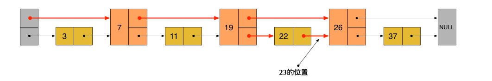
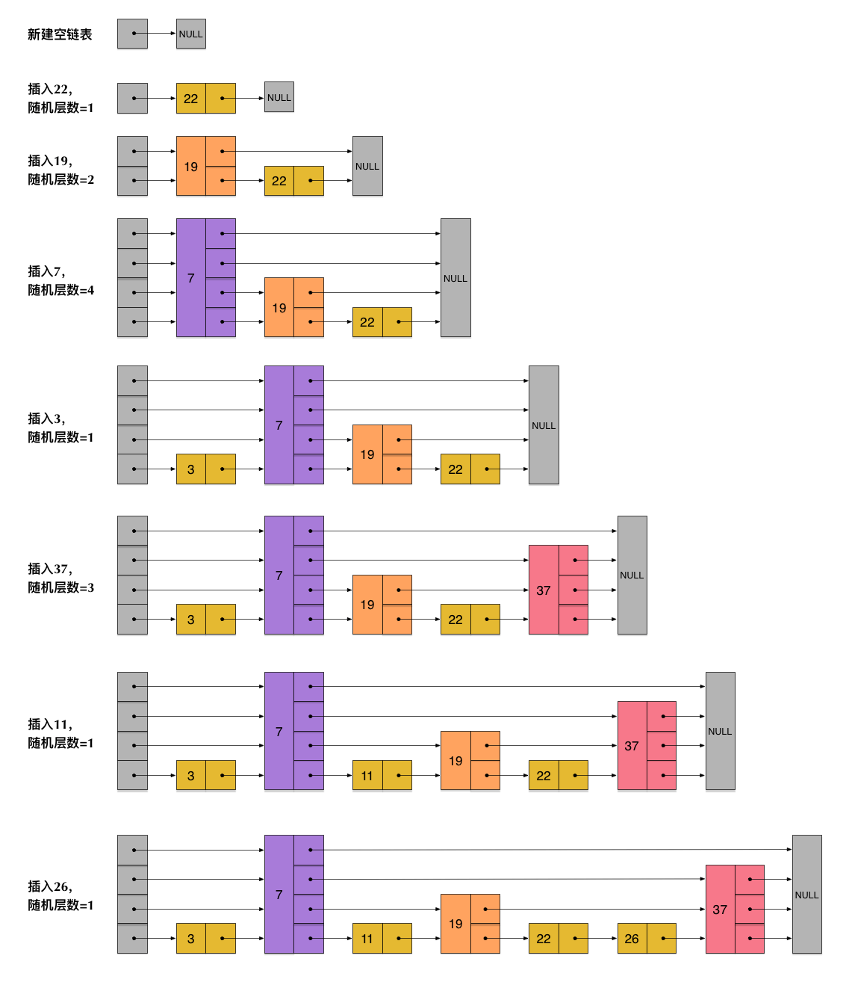
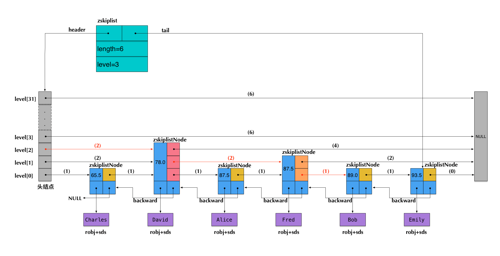

1. Redis 的 SkipList
跳跃表是一种有序数据结构，支持平均 O(logN)、最坏 O(N) 复杂度的节点查找；大部分情况效率可以和平衡树相媲美，实现却比平衡树简单。
跳跃表就是 Redis 中有序集合键的底层实现之一。
1
2
3
4
5
6
7
8
9
10
11
12
13
14
15
16
17
18
19
20
typedef struct zskiplistNode {
sds ele;
double score;
struct zskiplistNode backward;
struct zskiplistLevel {
struct zskiplistNode forward;
unsigned long span;
} level[];
} zskiplistNode;
typedef struct zskiplist {
struct zskiplistNode header, tail;
unsigned long length;
int level;
} zskiplist;
typedef struct zset {
dict dict;
zskiplist zsl;
} zset;
skiplist，顾名思义，首先它是一个list。实际上，它是在有序链表的基础上发展起来的。

当我们想查找数据的时候，可以先沿着跨度大的链进行查找。当碰到比待查数据大的节点时，再回到跨度小的链表中进行查找。
skiplist正是受这种多层链表的想法的启发而设计出来的。按照上面生成链表的方式，上面每一层链表的节点个数，是下面一层的节点个数的一半，这样查找过程就非常类似于一个二分查找，使得查找的时间复杂度可以降低到 O(logN)。但是，存在的一个问题是：如果插入新节点后就会打乱上下相邻两层节点是 2:1 的对应关系。如果要维持，则需要调整后面所有的节点。
skiplist为了避免这一问题，它不要求上下相邻两层链表之间的节点个数有严格的对应关系，而是为每个节点随机出一个层数(level)。

插入操作只需要修改插入节点前后的指针，而不需要对很多节点都进行调整。这就降低了插入操作的复杂度。实际上，这是 skiplist 的一个很重要的特性，这让它在插入性能上明显优于平衡树的方案。
skiplist，翻译成中文，可以翻译成“跳表”或“跳跃表”，指的就是除了最下面第1层链表之外，它会产生若干层稀疏的链表，这些链表里面的指针故意跳过了一些节点（而且越高层的链表跳过的节点越多）。这就使得我们在查找数据的时候能够先在高层的链表中进行查找，然后逐层降低，最终降到第1层链表来精确地确定数据位置。在这个过程中，我们跳过了一些节点，从而也就加快了查找速度。

-
skiplist 中 key 允许重复。
-
在比较时，不仅比较分数（即key），还要比较数据自身。
-
第一层链表是双向链表，并且反向指针只有一个。
-
在 skiplist 中可以很方便计算每个元素的排名。
Redis 中的有序集合（sorted set），是在 skiplist, dict 和 ziplist 基础上构建起来的:
-
当数据较少时，sorted set是由一个 ziplist 来实现的。其中集合元素按照分值从小到大排序。
-
当数据多的时候，sorted set 是由一个叫 zset 的数据结构来实现的，这个 zset 包含一个 dict + 一个 skiplist。dict 用来查询数据到分数(score)的对应关系，而 skiplist 用来根据分数查询数据（可能是范围查找）。
转换的条件是：
-
有序集合保存的元素数量小于 128 个；（通过参数
zset-max-ziplist-entries来调节，默认为 128。） -
有序集合保存的所有元素成员的长度都要小于 64 个字节；（通过参数
zset-max-ziplist-value来调节，默认为 64。）
在 t_zset.c/zsetConvert 中执行转换操作。
1
2
3
4
5
6
7
8
9
10
11
12
13
14
15
16
17
18
19
20
21
22
23
24
25
26
27
28
29
30
31
32
33
34
35
36
37
38
39
40
41
42
43
44
45
46
47
48
49
50
51
52
53
54
55
56
57
58
59
60
61
$ redis-cli --raw
127.0.0.1:6379> ZADD NameRanking 1 "D瓜哥"
1
127.0.0.1:6379> ZADD NameRanking 2 "https://www.diguage.com"
1
127.0.0.1:6379> ZADD NameRanking 3 "https://github.com/diguage"
1
127.0.0.1:6379> ZRANGE NameRanking 0 -1 WITHSCORES
D瓜哥
1
https://www.diguage.com
2
https://github.com/diguage
3
127.0.0.1:6379> TYPE NameRanking
zset
127.0.0.1:6379> OBJECT encoding NameRanking
ziplist
127.0.0.1:6379> ZADD NameRanking 4 "1234567890123456789012345678901234567890123456789012345678901234"
1
127.0.0.1:6379> ZRANGE NameRanking 0 -1 WITHSCORES
D瓜哥
1
https://www.diguage.com
2
https://github.com/diguage
3
1234567890123456789012345678901234567890123456789012345678901234
4
127.0.0.1:6379> OBJECT encoding NameRanking
ziplist
127.0.0.1:6379> ZADD NameRanking 5 "12345678901234567890123456789012345678901234567890123456789012345"
1
127.0.0.1:6379> ZRANGE NameRanking 0 -1 WITHSCORES
D瓜哥
1
https://www.diguage.com
2
https://github.com/diguage
3
1234567890123456789012345678901234567890123456789012345678901234
4
12345678901234567890123456789012345678901234567890123456789012345
5
127.0.0.1:6379> OBJECT encoding NameRanking
skiplist
127.0.0.1:6379> TYPE NameRanking
zset
在 JDK 中，也有 skiplist 的实现，在 ConcurrentSkipListMap 中。不过，它不是作为一个独立的 Collection 来实现的，而是作为 Map 的一部分来实现的。
2. 参考资料
-
Redis 核心数据结构（二） - "地瓜哥"博客网 — 本文中的 Redis 内容是这篇文章的一个拷贝。请以原文为准备，本文尽量同步更新。
-
William Pugh《Skip Lists: A Probabilistic Alternative to Balanced Trees》